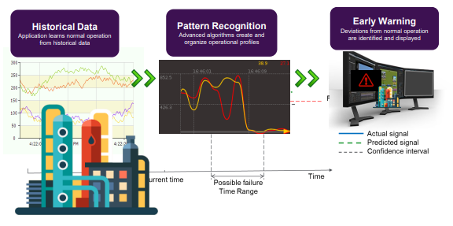
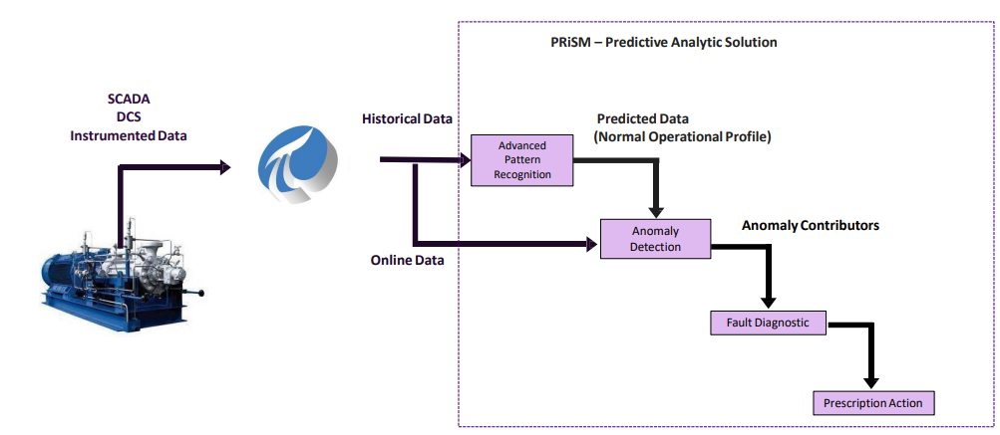
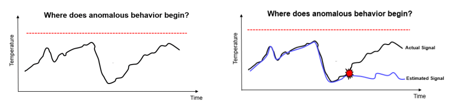
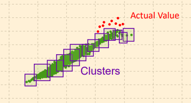
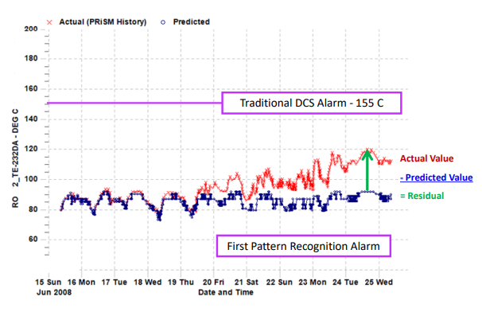
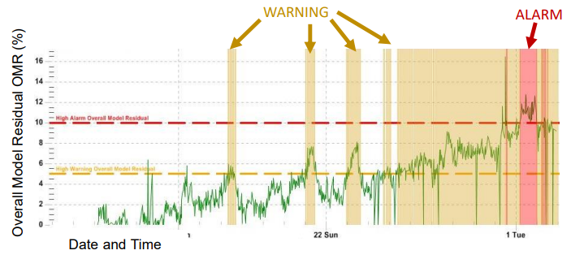
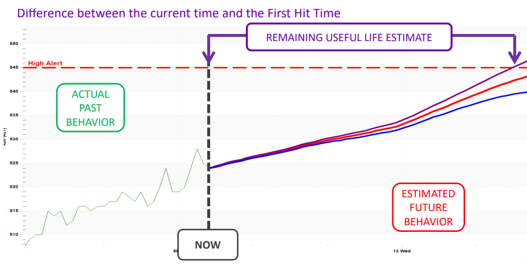

"AI-powered analytics that forecast outcomes before they happen."
Three stages — historical learning, pattern recognition, and real-time alerting — working as a single continuous intelligence loop.
The system ingests months of sensor data — temperatures, pressures, vibration, flow rates — learning what "normal" looks like for your specific equipment under your specific operating conditions.
Advanced algorithms build operational profiles — identifying complex multi-variable patterns that precede failure, invisible to any single-sensor threshold system.
Deviations from normal operational profiles are identified the moment they emerge — before the actual signal reaches any static alarm limit. Your team acts on probability, not confirmed damage.

Every data source feeds into a single unified intelligence layer. The system doesn't just detect — it diagnoses and prescribes.
SCADA, DCS, and instrumented sensor data ingested in real time. Historical and online streams unified into a single data fabric.
Historical data trains models to build normal operational profiles. Deviations in live data are scored against learned baselines.
Real-time comparison of actual vs. predicted values. Residual gaps that exceed learned confidence bands trigger immediate investigation.
When anomalies are confirmed, the system identifies the contributing factors — root cause analysis without manual investigation.
The final output is actionable: a specific maintenance recommendation, parts list, or operational adjustment — not just an alarm.

System Architecture · Data-to-Action Intelligence Pipeline
"Stop reacting to damage.
Start acting on probability."
Traditional monitoring waits for a threshold breach. Our system detects the early signal of drift — days before any damage occurs.
Traditional monitoring relies on fixed alarm limits — by the time the signal crosses the threshold, damage is already accumulating. Our approach compares the actual sensor signal against the AI-estimated signal. The moment these diverge beyond the confidence band, an anomaly is flagged — regardless of whether the signal has crossed any static threshold.

Historical failure data is organized into behavioral clusters — groupings of sensor patterns that preceded known failure events. When live operational data begins drifting outside its normal cluster and toward a historical failure cluster, the system raises a pre-failure warning with the matching failure mode identified.

The system runs a continuous live comparison — actual reading versus what the model predicts it should be. The residual (gap between the two signals) is tracked in real time. When the residual grows beyond the learned confidence interval for that operating condition, an anomaly event is logged and triaged.

Not all anomalies are emergencies. The system uses a graduated threshold model — Overall Model Residual (OMR) levels trigger distinct responses. Early warning gives teams time to plan. A confirmed alarm escalates to immediate action. No false urgency, no missed signals.

The system doesn't just alert — it tells you how urgent, why it matters, and what to do. Three distinct response levels, each with prescribed action protocols.
Residual within learned confidence band. Equipment tracking as expected. Continuous monitoring active.
OMR exceeds warning threshold. Early behavioral drift detected. Schedule inspection within 7 days. Failure classification in progress.
OMR exceeds alarm threshold. Failure trajectory confirmed. Immediate intervention required. Prescription action issued.
Overall Model Residual (OMR) · Warning & Alarm Threshold Monitoring

Remaining Useful Life Estimate · Actual vs Projected Degradation Trajectory
Beyond anomaly detection — the system projects how long each asset has before reaching its failure threshold. Maintenance is planned with precision, not guesswork.
The system anchors its forecast on the real measured degradation trajectory — not generic failure curves or manufacturer specifications.
From the current state, the model projects the most probable degradation path — with upper and lower confidence bounds defining the uncertainty envelope.
The RUL estimate gives your maintenance team a concrete time window — from "now" to the projected first breach of the high-alert threshold. Plan resources, not emergencies.
As new data arrives every cycle, the RUL estimate is recalculated. If operating conditions improve, the window extends. If they worsen, alerts escalate immediately.
Four industries. Four critical problems. One platform that anticipates failure before it costs you production, revenue, or safety.
Every unplanned stoppage in a mining operation costs $80K–$200K per hour. Conveyor belt failures cascade into total production halts lasting days.
A haul truck's hydraulic system begins showing subtle bearing frequency shifts 9 days before actual failure. No traditional DCS alarm is triggered. The Predictive Operations Platform issues a warning on day 3 — giving the team a 6-day maintenance window.
Fixed-interval maintenance schedules either over-service healthy machines or miss degrading ones. Neither approach is efficient.
A CNC machine spindle shows micro-vibration anomalies outside its learned cluster. The system projects RUL at 11 days — perfectly timed for the upcoming weekend maintenance window. No emergency shutdown required.
Grid operators manage massive load variation across weather cycles, demand surges, and equipment aging — with limited visibility into failure probability.
A transformer shows thermal residual drift consistent with the pre-overload cluster from historical data. The system flags it 5 days before a projected high-demand weather event — giving the grid operator time to reroute load and pre-position maintenance crews.
Fleet operators struggle to balance vehicle availability with preventive maintenance. Breakdowns on-route cost customer SLAs, recovery logistics, and driver safety.
A delivery truck's brake system shows friction wear patterns crossing the boundary of its historical failure cluster. RUL is estimated at 8 days. The vehicle is swapped out at the next scheduled depot stop — before any breakdown occurs.
Four measurable outcomes. Every client engagement is defined by numbers — not promises.
Failures caught days before occurrence eliminate unplanned stoppages entirely — replaced by scheduled, precision maintenance windows.
Condition-based maintenance and optimized operating parameters dramatically reduce wear accumulation on critical components.
No more over-servicing healthy equipment or emergency callouts. Maintenance resources deployed exactly where and when needed.
Early warning issued up to 7 days before projected failure threshold breach — giving teams a full planning window for every intervention.